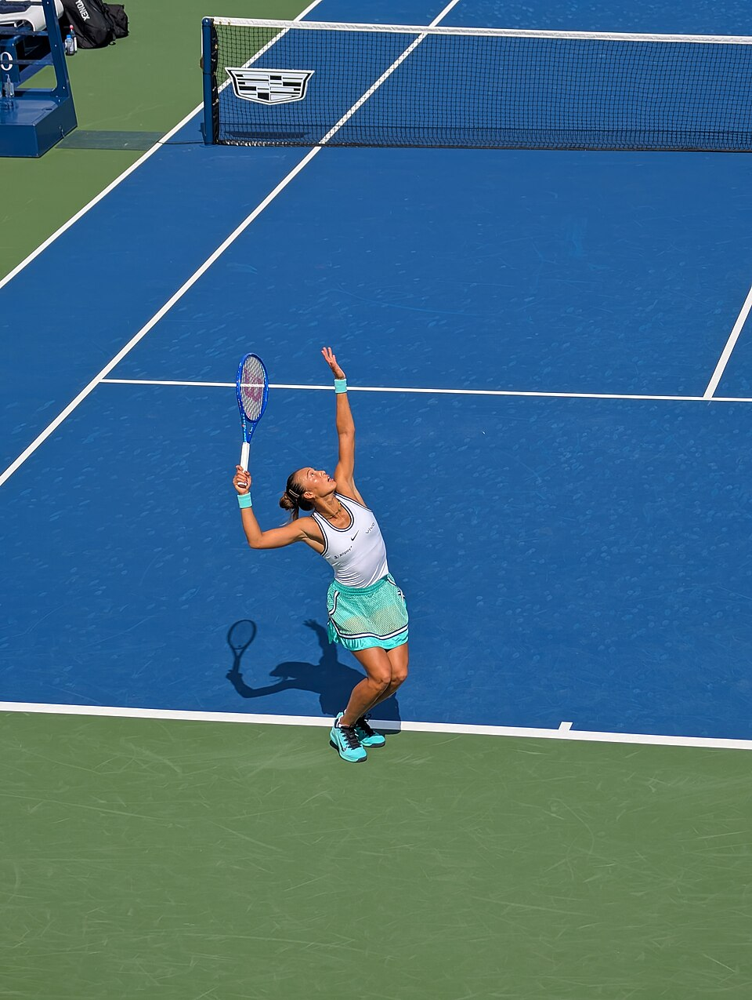

O China Open feminino de 2026 conheceu suas finalistas após duas vitórias em sets diretos nas semifinais. A russa Mirra Andreeva derrotou a tcheca Nikola Bartunkova por 6/2 e 6/2, enquanto a chinesa Zheng Qinwen superou a belga Elise Mertens por 7/5 e 6/2. Os resultados definiram uma decisão com ingredientes especiais: juventude, força ofensiva, crescimento na temporada e a possibilidade de um título histórico para o tênis da China. Os duelos decisivos já haviam sido apresentados na prévia das semifinais.
Disputado nas quadras duras do National Tennis Center, em Pequim, o China Open integra a categoria WTA 1000, uma das mais importantes do circuito feminino. A edição de 2026 chega ao último dia com duas jogadoras que construíram trajetórias diferentes até a final, mas apresentaram atuações convincentes nas semifinais.
Andreeva chega embalada por uma temporada de grandes conquistas e pela perspectiva de alcançar a terceira posição do ranking mundial. Zheng, por sua vez, transformou sua campanha em um marco nacional ao se tornar a primeira chinesa a disputar a final de simples do torneio.
Andreeva domina Nikola Bartunkova
A primeira semifinal colocou frente a frente duas representantes da nova geração do tênis feminino. De um lado, Mirra Andreeva, de 19 anos, cabeça de chave número quatro e campeã de Roland Garros em 2026. Do outro, Nikola Bartunkova, de 20 anos, que vinha de uma campanha surpreendente e buscava sua primeira final de WTA 1000.
Andreeva não permitiu que a adversária repetisse as atuações que haviam marcado sua trajetória em Pequim. A russa venceu em apenas 1 hora e 14 minutos, controlando os momentos importantes e demonstrando grande eficiência nas devoluções.
Andreeva terminou a semifinal com 16 bolas vencedoras e apenas 10 erros não forçados. Também aproveitou cinco das dez oportunidades de quebra de saque que construiu durante o confronto.
A capacidade de pressionar o serviço adversário foi uma das principais características da atuação da russa. Seu trabalho nas devoluções, desenvolvido ao lado da treinadora Conchita Martínez, voltou a produzir resultados importantes.
A classificação representou a 50ª vitória de Andreeva na temporada e garantiu sua quinta final de 2026. Antes de Pequim, ela havia conquistado os títulos de Adelaide, Linz e Roland Garros, além de terminar como vice-campeã em Madri.
O crescimento da tenista ao longo do ano também está diretamente ligado à conquista de seu primeiro Grand Slam em Paris, resultado que consolidou seu nome entre as principais atletas da modalidade.
Com a campanha no China Open, Andreeva ainda assegurou a projeção de alcançar o terceiro lugar do ranking mundial na atualização seguinte à competição, independentemente do resultado da final.
Embora tenha encontrado dificuldades contra Andreeva, Nikola Bartunkova deixou Pequim com resultados importantes para sua carreira.
A tcheca eliminou Aryna Sabalenka, uma das principais jogadoras do circuito, na terceira rodada, vencendo por 6/4 e 6/3. Nas quartas de final, voltou a surpreender ao derrotar a compatriota Karolina Muchova por 6/3 e 6/0 em apenas 67 minutos.
A vitória sobre Muchova garantiu a Bartunkova sua primeira semifinal de WTA 1000 e consolidou uma campanha que também lhe assegurou a entrada inédita no grupo das 30 melhores do mundo.
Zheng Qinwen faz história no China Open
A segunda semifinal teve um significado especial para o público chinês. Zheng enfrentou Elise Mertens com a oportunidade de conquistar algo que nenhuma tenista do país havia conseguido desde a entrada do China Open no calendário da WTA, em 2004: alcançar a final de simples feminina.
A chinesa venceu em 1 hora e 32 minutos, encerrando a campanha da belga e garantindo seu lugar na decisão.
O primeiro set foi o trecho mais equilibrado da partida. Zheng conseguiu uma quebra de saque e abriu 4/2, mas Mertens reagiu e recuperou a desvantagem. A chinesa precisou manter a concentração na reta final da parcial para voltar a pressionar o serviço da adversária.
Com 6/5 no placar, Zheng conquistou nova quebra e fechou o primeiro set por 7/5.
Na segunda parcial, a chinesa assumiu o controle da partida. Sua força nas batidas de fundo de quadra e a eficiência no saque dificultaram a reação de Mertens. Zheng venceu oito dos últimos dez games do confronto e confirmou a classificação.
O resultado levou Zheng à 11ª final de simples de sua carreira e à segunda decisão de nível WTA 1000.
Mais importante, encerrou uma sequência de sete derrotas de tenistas chinesas nas semifinais do China Open.
Já a derrota da Elise Mertens na semifinal encerrou uma das campanhas de maior destaque do torneio.
Mertens chegou às quatro melhores depois de superar três campeãs de Grand Slam em sequência: Jelena Ostapenko, Coco Gauff e Iga Swiatek.
O resultado mais marcante aconteceu nas quartas de final, quando a belga derrotou Swiatek por 7/6 (7-0) e 6/3. A vitória representou seu primeiro triunfo sobre a polonesa em três confrontos e garantiu sua primeira semifinal de simples em um WTA 1000 desde 2021.
Mertens apresentou regularidade e inteligência na construção dos pontos durante boa parte da competição. Na semifinal, entretanto, não conseguiu conter o volume ofensivo de Zheng, especialmente na segunda parcial.
Final do China Open feminino 2026
A decisão do título acontece neste domingo, 11 de outubro, na quadra principal do National Tennis Center, em Pequim.
O confronto também será um reencontro entre as duas tenistas no torneio chinês. Em 2024, elas se enfrentaram nas quartas de final do China Open, com vitória de Zheng. Aquele foi o único confronto anterior entre as duas no circuito da WTA.
Para Andreeva, a final representa a oportunidade de conquistar seu quarto título da temporada e o terceiro troféu de WTA 1000 da carreira.
Zheng busca seu primeiro título de WTA 1000 e tenta se tornar a primeira representante da China a levantar a taça de simples feminina em Pequim.
A decisão também terá impacto na distribuição de pontos para o ranking mundial. A campeã receberá 1.000 pontos pelo título, enquanto a vice-campeã ficará com 650 pontos, sujeitos às regras de atualização do ranking.
Serviço da final:
- Horário: não antes das 8h30, de Brasília
- Transmissão: Disney+
Brasil também terá representante na final de duplas
Além da definição do título de simples, o domingo contará com participação brasileira na decisão de duplas.
Luisa Stefani e a canadense Gabriela Dabrowski garantiram classificação ao derrotar Elise Mertens e Diana Shnaider por 6/4, 3/6 e 10/7 no super tie-break da semifinal.
A dupla, cabeça de chave número dois da competição, enfrentará Katerina Siniakova, da República Tcheca, e Zhang Shuai, da China, principais favoritas da chave.
A decisão está programada para começar às 5h30 da manhã, pelo horário de Brasília, equivalente às 16h30 em Pequim.
A campanha representa o melhor resultado de Luisa Stefani no China Open. Antes de 2026, sua melhor participação havia sido a semifinal de 2023, ao lado de Ingrid Martins.
A presença da brasileira coloca mais um elemento de interesse para o público nacional no encerramento do torneio.
O que esperar da decisão de smples
A final reúne duas tenistas com características que prometem um confronto interessante.
Andreeva tem apresentado grande consistência nos ralis, capacidade de mudar a direção das bolas e eficiência nas devoluções. A russa também chega com a confiança acumulada pelos títulos conquistados em 2026.
Zheng aposta em um estilo mais agressivo, com saque potente e golpes de fundo de quadra capazes de encurtar os pontos. O desempenho contra Mertens mostrou como sua força ofensiva pode fazer a diferença quando consegue manter o controle dos erros.
O ambiente também será um componente importante. Zheng terá o apoio do público local em uma partida histórica para o tênis feminino chinês, enquanto Andreeva precisará administrar essa pressão para conquistar mais um título relevante.
Independentemente da campeã, Pequim terá uma vencedora inédita. Para Andreeva, será mais uma oportunidade de ampliar uma temporada de destaque internacional. Para Zheng, a chance de transformar uma final histórica em um título sem precedentes para uma tenista chinesa no torneio.